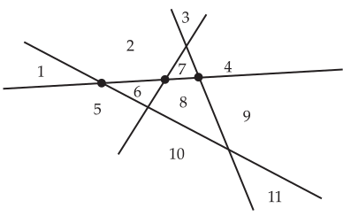

Handout 3.1 Recursive Counting
How can we interpret the notation
\(1+2+\cdots + n^2\text{?}\)
The version above is reasonably unambiguous, but what if it were \(1+\cdots + n^2\text{?}\) Then you might wonder if I meant \(1+4+9+16+\cdots+n^2\text{.}\) This is why we introduce Sigma-notation, which we define recursively:
\begin{align*}
\sum_{i=1}^1 f(i) \amp = f(1)\\
\sum_{i=1}^n f(i) \amp = f(n) + \sum_{i=1}^{n-1}f(i)\amp \text{for }n\geq 2
\end{align*}
Using this, we see, for instance, that
\begin{align*}
\sum_{i=1}^4 f(i) \amp = f(4) + \sum_{i=1}^3 f(i)\\
\amp = f(4) + f(3) + \sum_{i=1}^2 f(i)\\
\amp = f(4) + f(3) + f(2) + \sum_{i=1}^1 f(i) \\
\amp= f(4)+f(3) + f(2) +f(1)
\end{align*}
Peer instruction question 1
\begin{equation*}
\binom{n}{k} = \binom{n-1}{k-1} + \binom{n-1}{k}
\end{equation*}
The first term on the right-hand side counts the
\(k\)-element subsets of
\([n]\) that
do contain 1, since once we have decided that 1 is in the subset, we still need
\(k-1\) more elements and have
\(n-1\) elements to pick them from. The second term on the right-hand side counts the
\(k\)-element subsets of
\([n]\) that
do not contain 1, since if we have decided that 1 is not in the subset, we have only
\(n-1\) elements to pick from but we must pick
\(k\) of them. Every
\(k\)-element subset must either contain 1 or not contain 1, so this has counted all of the
\(k\)-element subsets and therefore the sum equals
\(\binom{n}{k}\text{.}\) We call this equation
Pascal’s Identity, which we use to construct
Pascal’s Triangle. We show this below.
The first 11 rows of Pascal’s triangle. A triangular array of hexagons, each row containing one more hexagon that the row above it. In each hexagon is an integer: 1’s on the border of the triangle, and every integer inside the triangle the sum of the two integers above it.
To illustrate the role of Pascal’s identity in the triangle, note that
\(35\) is in the seventh row (starting counting from the zeroth) and the first
\(35\) in this row is in the third position (starting counting from the zeroth). Thus, we interpret this as
\(C(7,3) = 35\text{.}\) Looking at the two cells above
\(35\text{,}\) we see
\(15\) and
\(20\text{.}\) Notice that
\(35=15+20\) and furthermore,
\(C(6,2)=15\) and
\(C(6,3)=20\text{.}\)
Activity 3.1.1.
Suppose that
\(f\) is a function defined on the positive integers. You know that
\(f(1) = 0\) and for all
\(n\gt 1\text{,}\) \(f(n) = 3f(n-1)+2\text{.}\) What is
\(f(3)\text{?}\)
Solution.
We have
\begin{equation*}
f(3) = 3f(2) + 2 = 3(3f(1)+2) + 2 = 9f(1) + 6+ 2= 9\cdot 0 + 8 = 8\text{.}
\end{equation*}
Peer instruction question 2
Let
\(r(n)\) be the number of regions determined by
\(n\) lines in the plane drawn so that each pair intersects but no three lines intersect at a single point.
| \(n\) |
\(r(n)\) |
| 0 |
1 |
| 1 |
2 |
| 2 |
4 |
| 3 |
7 |
| 4 |
11 |

Four lines drawn in the plane so that each pair of lines intersects and no three lines intersect at a single point. On one of the lines, the three points of intersection with the other three lines are marked with dots. The regions determined by the lines are numbered from
\(1\) to
\(11\text{.}\)
When adding the
\(n\)-th line, this new line is cut exactly once by each of the existing
\(n-1\) lines. The
\(n\)-th line is thus cut into
\(n\) pieces. Each of these pieces takes one of the regions that the
\(n-1\) lines determined and divides it into two regions. This nets the addition of
\(n\) new regions, if we count one of the pieces into which an existing region was cut as counting toward the
\(r(n-1)\) existing regions. Thus, we have
\(r(n) = r(n-1) + n\) for
\(n\geq 1\) and
\(r(0)=1\text{.}\) Alternatively, you could consider that there are
\(r(n-1)-n\) regions that are untouched by the
\(n\)-th line and
\(2n\) new regions formed by the cutting of the new line. But this still gives
\(r(n) = r(n-1)-n + 2n = r(n-1)+n\text{.}\)